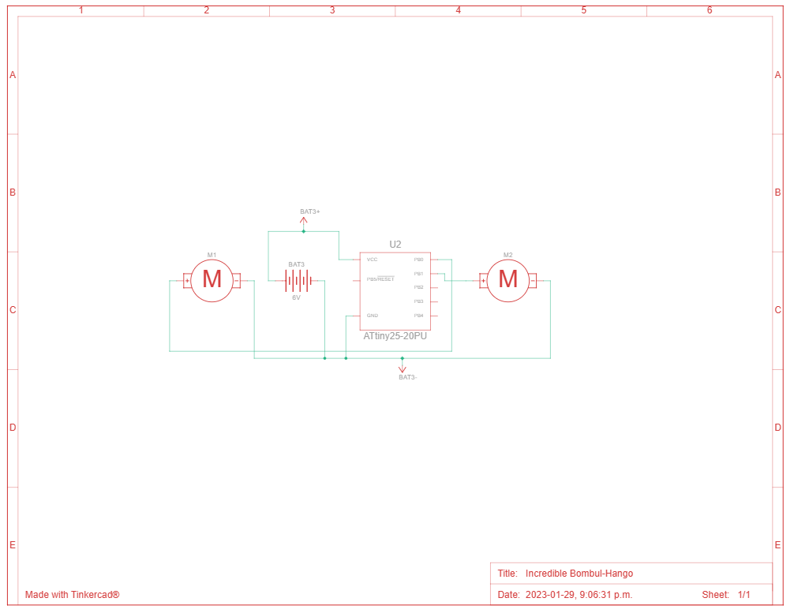

January 29th, 2023
I haven't posted to this page for awhile because
quite frankly, I have not had much to post on. However, some people know that I am quite a tinkerer when it comes to electronics
and microcontrollers. I recently got new tips for my soldering iron, some new resistors, and a boat load of LED's! But one struggle
I have always had when it came to electronics was downsizing the electronics I make; typically relying on Arduino UNO and the Raspberry Pi
for a majority of my projects... Until I came across the ATTiny85 microcontroller! I've heard of ATTiny before, but up until now I have not
seen or heard of the many uses for this microcontroller. Now I realize that my ambition to make electronics smaller can now be pursued.
As you can imagine, for a majority of Arduino projects, you have to use a spew of jumper wire, breadboards, resistors (and the list goes on).
But what if you wanted to make a more permanent solution? By using the ATTiny85 I can create my own PCB's and integrate them with the ATTiny85,
helping to cut down on a robot's form-factor. Albeit in the future I may need more pins for extensive projects, I really want to play my hand
in creating a really small robot.
For the longest time, majority of the bots I have built have been huge and sometimes lunky. But this time
around, I want to go the opposite direction and go smaller. For this, I will be creating an ALARM BOT. What will this robot do exactly?
It does exactly what the name stipulates (with some extra annoying features), it beeps! LOUDLY. It also drives around the room in random
places until the user presses on top of it to shut it off. Consider it if you will, an extra step in your morning routine. You may ask yourself
this: "Why are you going to create something that already exists"? Well I consider it more of a challenge than anything else. I want to get
more comfortable creating my own PCB designs and I also want to dive deeper into electronics. What better way than to make something annoying?
Challenge accepted. More to follow on this in the coming weeks! In the meantime, here's a schematic of what I have been building in TinkerCAD:

My first post!
December 29th, 2022
Welcome to
my blog page! This is a simple HTML/CSS blog that works with GitHub Pages.
Unfortunately, there is no way to integrate a server with GitHub pages, so this
will have to do. I will update the page with new things I learn on my tech journey and
everything I do in between. Please keep posted for many updates, opinions, events,
and my general ranting and roaring. I hope you all enjoy the tech journey as much as I do!